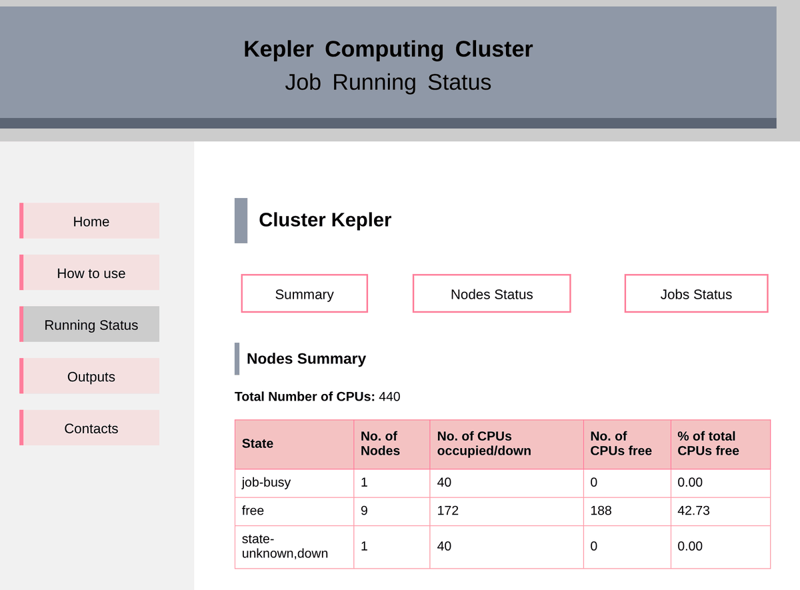

Projects
Software, HPC and data projects from my research and service work. Each one lists the tools I used.
Kepler HPC cluster: administration and live dashboard
IISER Kolkata, Department of Physical Sciences · System Administrator and Maintenance Coordinator, Apr 2023 – May 2024 (alongside my postdoc)
Kepler is the shared computing cluster of the physics department. It is used by many research groups, from master's students to faculty.
What I did
- Ran the cluster day to day: user accounts, queues and job scheduling, software installation, network administration and resource planning.
- Was the first point of contact for users: fixed failed jobs, build errors and missing libraries, and turned common problems into short guides.
- Designed and built the cluster website from scratch: home page, usage guide, contacts, and an Outputs page with a form to record papers that used the cluster.
- Built the live Running Status dashboard. It shows node states, free CPUs per node and queue, jobs per user with run time and CPU-efficiency figures (CPU time divided by run time × cores), and a storage-usage report. Tables can be sorted and are organised in tabs.
- Presented the facility to all users at DPS Days 2024.
Result: users can see at a glance where to submit jobs, and the administrators can spot idle or inefficient jobs quickly. The dashboard is still running in 2026.

HRI cluster status page
Harish-Chandra Research Institute, Prayagraj · Jan 2020 – Nov 2021
My first cluster dashboard: a web page that showed the live status of running jobs on the HRI HPC facility, so that users could choose where to submit without asking the administrator. The Kepler dashboard grew out of this work.
DynamicR: open-source C++ package
IISER Kolkata and IMSc · paper 2023, release in FastJet Contrib v1.104 (2026)
Jet algorithms group thousands of particles in a collision into a few objects ("jets"). Standard algorithms use one fixed size for every jet. With colleagues I proposed the Dynamic Radius algorithm, in which the size of each cluster follows the local data, so one algorithm can capture both narrow and wide jets.
- Wrote the official C++ implementation as a plugin for FastJet, the standard jet-clustering library in particle physics.
- Prepared it for public release with documentation, a worked example and a regression test, and got it accepted into FastJet Contrib.
- Wrote a Python tool that animates each clustering step as a video, for talks, teaching and debugging.
- Generalised the method for more robust analyses (preprint, 2026).
Code on GitHub FastJet Contrib Paper (JHEP 2023) Generalisation (2026)
Collider data analysis with CMS Open Data
IMSc and IISER Kolkata · Phys. Rev. D 113 (2026) 035034
In this project we applied the Dynamic Radius method to CMS Open Data, the public data sets released by the CMS experiment at CERN, in a search for vector-like top partners (hypothetical heavy particles). The new jet features gave a clear gain in sensitivity over standard methods. The CMS B2G (boosted objects) group invited me to present the work in 2026, to explore its use in CMS analyses.
Machine learning and statistics on large simulated datasets
Classifying rare signals
Multivariate classifiers (boosted decision trees) built on high-dimensional jet features to separate the polarisation states of boosted W bosons, judged with ROC curves and significance.
Quark or gluon?
Used jet-substructure features to tell which type of new heavy particle produced a pair of jets, improving searches for dijet resonances at the LHC.
Correcting measurement bias (unfolding)
An unfolding method to recover true distributions of quantum-entanglement observables from distorted detector-level data: an inverse problem with real uncertainties.
Self-organising maps
Unsupervised self-organising maps to search for a rare process at the LHC (work presented at the ML4HEP programme, ICTS Bengaluru, 2023).
More software
- PhDMonte Carlo event generator for a near-continuous spectrum of new particle states that standard tools could not handle.
- 2026Monte Carlo generator for FCC-ee with lepton and photon distribution functions (arXiv:2603.27822).
- 2018–nowReproducible pipelines in C++, Python and Bash that run large simulation campaigns on HPC clusters (terabytes of data).